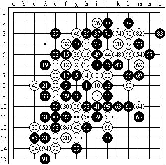

全锦赛自战解说——贺启发（炫飞☆白痴）
#1 全锦赛自战解说——贺启发（炫飞☆白痴）作者：炫飞冰弦 发表时间：2008-12-23 1:30:24
全团塞后不知不觉半年过去了，这半年来还没看过棋谱，没咋下过棋，知识量可谓狭窄，去石家庄的路就想好了死猪不怕开水烫了。
抽签后第一轮是九指老师，棋感超强并对各种开局都有很深入研究的棋手，传言九老师没有不会下的棋，采用哪个开局让我颇费心思。比赛敲响，最终开了疏星，只有抱着和九老师学一变化的想法来下了，输了后面还比较好拿分。
第一局 白痴（黑）胜 杨彦希（白）
实战疏星，九老师没有交换，我打出一二打目的就是希望在不中研究的情况下保证和棋，九老师留了二打，迅速的下出了实战的白6，结果一下把我打蒙了，下了不知道多少回这个黑5，就从没见过这样的白6，新研究吗？有阴招吗？比赛阿，每办法抱头想吧，当发现黑7点，白8一系列的点都已属无效顽抗后，才想到，九老师可能是在考我，其实白8跳J11再防19位置，应该是比较有欺骗性的，实战白8老实防，黑9活3，11手必胜型。实际过后才知道九老师是手一抖白6下挫了方向，我真是走运了九老师送了我一分。出来后知道我们炫飞第一轮三战胜，德比和棋，开头还是很不错的。 午饭后知道我的第2轮对手是戴晓涵5段，真是难受，前两轮就碰这些鼎鼎有名的高手，不过不用准备，因为是对手开局。 节奏无论怎么紧张比赛还是照样进行着，不给任何人轻松的氛围，或许这个就是比赛的乐趣。
第二局 白痴（黑）胜 戴晓涵（白） 交换

戴老师给我开出了斜月，默想了一下自己白棋对斜月的了解就没啥下头的，关键还是自己的知识量太小，不管怎样还是要交换的，按照预想，打了一二打。对他们我就没想过赢，和棋就万岁，戴老师留了二打，很迅速的就走到了大家都熟的2打大定式，直到24---26手，虽说见过但是自己也没使用过黑棋来应对这个白棋。长考后选择了实战的27 ，对方的28实在是够强的，当时我就奇怪，黑的这么多活2还冲4 ，白28就敢不管，由于白28做出了很多眠3 ，我就设想对方做了VCF，复算了N次后发现白并不存在VCF，那我就得算算自己黑棋是否有好的走法，长考后算到自己VCT ，出去吹下风醒下脑回来复算，发现白有反4 。但是，杀不了就得防 ，冒险的杀法我可不敢采取，可是这个棋到底怎么防，白棋外面全是眠3，实战到41都是我力能所及的防，再有别的好的走法我也算不出来了，比赛时间在匆匆走动，也不敢过多的去一再验证。棋行到 83手时，互相都存在一些骗杀，直到对手92冲4 ，我反4 ，戴老师因为我仅剩2分钟，打算拍死我的时候 ，戴老师节奏没停下来，没防我的反4，我就这么幸运的又拿了一分。
第三局 白痴（黑）胜 芦海（白）
可谓是马不停蹄的赶下一场，2轮比赛下来人整个精神不集中，第3轮对手是卢海，网名非鸟，对于他我还算熟的，每天能坚持下8小时棋的人，流行变化熟得很的，虽然没有实战过，对他还是很顾及的。我镇定的走入赛场，不让对手看出我疲惫，开局的时候我故意静思开局，其实我早已经想好了开什么，所做的一切就是为了掩盖我已经没有体力再战斗了。由于对手对于一些开局了解得多，在网上我从没见他下过流星，所以我选择了流星开局，小鸟想了下并没有进行交换，下了一个八卦4手。 这个黑5本来我也不懂的，是在某次上海的比赛中和顾炜老师的一盘棋，顾老师打出的，其实我也不咋懂，赛后和顾老师拆了一下，黑棋13已经就必胜了，当时我已看对阿，黑的全部限制了白棋，后面的就没看了，结果小鸟长考了40分钟后下出了实战的14，我低头一看，黑棋的一系列进攻都受到白棋反4的反击，由于精神不集中，就不敢再算了，直接打算适当的交换然后控制中盘，希望对手能在时间的压力下出错。棋行27 是我当时预想得比较满意的交换，这样的交换控制中盘还不至于太失利，白28开始展开进攻，实战33手应该是必败的，当时我全部就下的感觉棋，已经没体力去计算了，而小鸟的时间已经很紧张了，36他没下出正招，黑37唯一防。棋行到53 小鸟已经不足5分钟，我的战术已经成功了，因为先手已经稳稳的在我的手上了，59至75的感觉棋对手在每秒一步的情况下全都走对了，这个让我很郁闷，眼看就要拍不死对手了，我突然往上跳了个3，对手没防，我就又得一分。经过这盘棋，可以告诫各位的就是智力运动也需要体力。
#2 Re:全锦赛自战解说——贺启发（炫飞☆白痴）作者：雨一直下 发表时间：2008-12-23 9:06:40
原来会写啊,以前是骗人的说不会写哼哼#3 Re:全锦赛自战解说——贺启发（炫飞☆白痴）作者：炫飞冰弦 发表时间：2008-12-23 11:37:51
白痴可是隐世高人
#4 Re:全锦赛自战解说——贺启发（炫飞☆白痴）作者：南姑钉子户 发表时间：2009-1-31 20:37:46
莎士比亚说：成功的骗子，不必再以说谎为生，因为被骗的人已经成为他的拥护者，我再说什么也是枉然.#5 Re:全锦赛自战解说——贺启发（炫飞☆白痴）作者：岳麓小棋后 发表时间：2009-3-28 22:52:58
这个帖子受到很严重的破坏呀，好帖子，有志可要尽快修复呀#6 Re:全锦赛自战解说——贺启发（炫飞☆白痴）作者：炫飞冰弦 发表时间：2009-3-29 15:43:18
有志大哥来帮下忙,这篇有原文,但是我不知道怎么弄
［ 有志青年 于 2009-3-30 22:23:48 时奖励此帖[金币加 20 威望加1］
已经修复，谢谢。